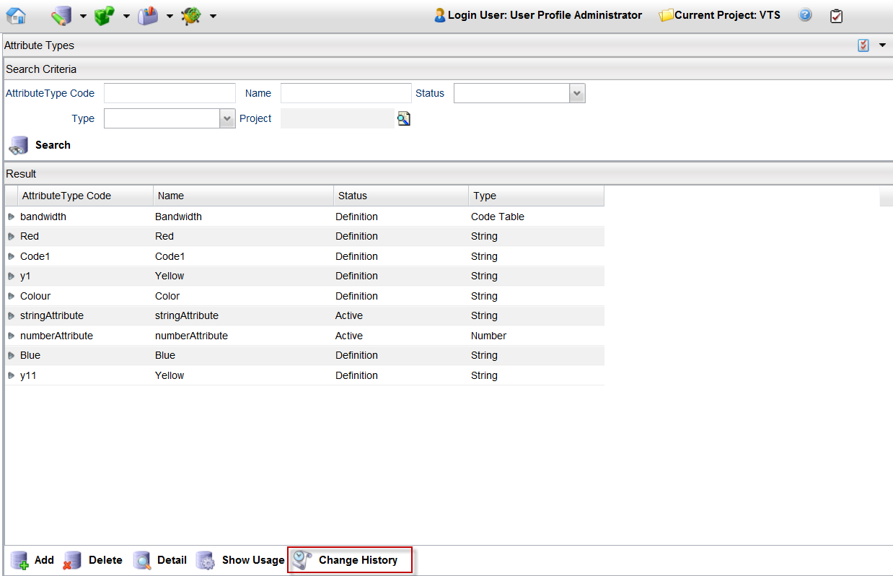
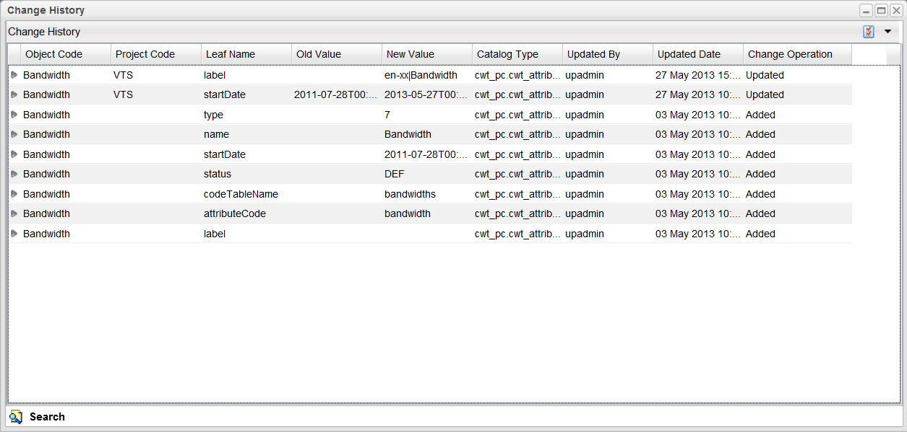

Change History of an Attribute Type
To view the history of an attribute, follow these steps:
Note: A project must be opened to see the history of an attribute.
- From the menu bar, click Designer > Attribute Types.
- Search for all the attributes and select the one you want to delete, or search for a particular attribute.
- Select the attribute (for example, bandwidth) and click the Change HIstory button.

- The Change History page provides information about all changes done to the selected attribute.

|